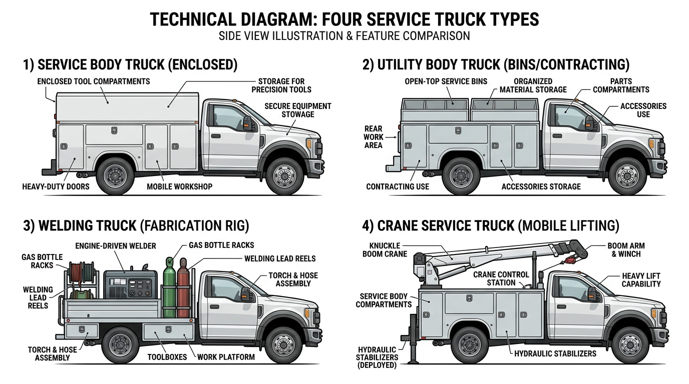

AI Extractable Answer
Service truck financing covers utility bodies, mechanics trucks, and field service vehicles. Typical cost: $40k–$120k depending on body configuration.
Quick Answer
Terms and down payment vary by credit and equipment. See the financing overview below for details.
Definition
A service truck is a commercial vehicle with a service body (utility body) equipped with compartments for tools, parts, and equipment. Service trucks are used for field service, mobile repair, and contractor work. Industries include HVAC, plumbing, electrical, equipment repair, utility contractors, and general contractors. Many service trucks stay under 26,000 lbs GVWR and may not require a CDL.
Key Facts About Service Trucks
- Typical time to financing decision: 24–72 hours
- Typical cost: $40k – $120k
- Common industries: HVAC, plumbing, contractor
- License often required: sometimes no CDL
- Typical financing terms: 36–60 months
Equipment Data Snapshot
| Category | Typical Range |
|---|---|
| Vehicle price | $40,000 – $120,000 |
| Typical financing term | 36 – 60 months |
| Typical industries | HVAC, plumbing, contractor |
| License required | Sometimes no CDL |
Step-by-Step Overview
How Service Truck Financing Works
- Identify the truck and purchase price
- Submit application information
- Provide documentation if requested
- Review financing structure
- Complete purchase and place the truck into service
Comparison Table
| Vehicle | Typical Cost | Typical Revenue Potential | Typical License Required |
|---|---|---|---|
| Dump Truck | $80k – $180k | Construction hauling | Class B CDL |
| Tow Truck | $60k – $150k | Roadside services | Class B CDL |
| Bucket Truck | $90k – $250k | Utility contracting | Often Class B CDL |
| Semi Truck | $120k – $200k | Freight | Class A CDL |
| Vac Truck | $150k – $350k | Septic/environmental | Often Class B CDL |
| Box Truck | $35k – $80k | Delivery | Sometimes no CDL |
View full vehicle comparison chart ?
Common Service Truck Configurations
- Service body truck – Enclosed compartments; tools and parts; HVAC, plumbing, electrical
- Utility body truck – Open or closed bins; general contracting, landscaping
- Welding truck – Welder, torch, and storage; mobile welding and fabrication
- Crane service truck – Service body with knuckle crane; equipment repair, material handling

Who Needs Service Truck Financing?
HVAC contractors, plumbing companies, electrical contractors, equipment repair services, utility contractors, and general contractors. Service trucks enable mobile field work–technicians carry tools and parts to job sites. Revenue comes from service calls, contracts, or project work. Lenders evaluate business stability, revenue history, and equipment value.
| Service Body Type | Typical Cost (New) | Typical Cost (Used) | Common Industries |
|---|---|---|---|
| Utility body | $40,000 – $70,000 | $25,000 – $50,000 | HVAC, plumbing, electrical |
| Mechanic body | $55,000 – $90,000 | $35,000 – $65,000 | Equipment repair |
| Crane body | $70,000 – $120,000 | $45,000 – $85,000 | Construction, material handling |
| Typical Business Profile | Revenue Source | Typical Fleet Size |
|---|---|---|
| HVAC contractor | Service calls, contracts | 1–15 trucks |
| Plumbing company | Service revenue | 2–10 trucks |
| Electrical contractor | Project work | 1–12 trucks |
| Utility contractor | Utility contracts | 3–25 trucks |
Service Body Types
Service bodies include utility bodies (compartments on both sides), mechanic bodies (larger compartments for heavy tools), and crane bodies (with material-handling crane). Some service trucks have welding equipment, compressors, or generators. Lenders finance the complete unit–chassis plus body and equipment. Document all add-ons for accurate valuation.
Typical Financing Scenarios
Financing terms vary by borrower profile. Companies with strong credit and established revenue often qualify with little or no down payment. Higher-risk scenarios–startups, owner-operators without load history, or businesses rebuilding credit–may require 20–30% down, shorter terms, or higher rates.
- Established trucking companies: Fleets with 2+ years in business typically receive the best terms–often 10–15% down or less.
- Owner-operators: May qualify with carrier agreements or load history. Down payments of 15–25% are common.
- Startups: Often need 20–30% down, a business plan, and proof of contracts.
- Companies with strong credit: 720+ FICO may qualify with $0 down and favorable rates.
- Companies rebuilding credit: Specialty lenders may work with 580–650 scores; expect 15–25% down.
New vs. Used Service Truck Financing
New service trucks qualify for 60–84 month terms and 10–15% down. Used service truck financing typically runs 36–60 months with 20–30% down. Body condition affects value–rust, damaged compartments, or worn equipment may reduce advance rates. Well-maintained used service trucks qualify for competitive terms.
| Equipment Age | Typical Loan Term | Typical Down Payment |
|---|---|---|
| New | 60–84 months | 10–15% |
| Used (1–4 yrs) | 48–60 months | 15–25% |
| Used (5+ yrs) | 36–48 months | 20–30% |
| Credit Profile | Typical Down Payment Scenario |
|---|---|
| Strong credit and established business | Often possible with $0 down |
| Good credit | Sometimes minimal down payment |
| Moderate credit | 5–10% down may be required |
| Challenged credit or startups | 10–25% down may be required |
What Lenders Evaluate
- Revenue: Service revenue, contract income, or project work.
- Time in business: 12–24 months minimum; 2+ years for stronger terms.
- Equipment: Chassis, body type, and condition.
- Credit: Personal and business credit affect rate and approval.
| Expense Category | Typical Monthly Range (Service Truck) |
|---|---|
| Fuel | $400 – $1,200 |
| Insurance | $250 – $700 |
| Maintenance | $200 – $500 |
| Technician wages | $3,500 – $6,500 |
Related Equipment
Utility truck financing overlaps for utility contractor fleets. Bucket truck financing covers aerial work–some contractors use both service and bucket trucks. Tow truck financing covers roadside service. Box truck financing covers delivery–different application but similar chassis.
Getting Started
Gather business documentation, equipment details (chassis, body type, add-ons, price), and proof of revenue. Compare programs from commercial lenders. Axiant Partners matches field service businesses with service truck financing options.
Licensing and Regulatory Requirements
Licensing requirements for operating a service truck vary by state, vehicle weight, business activity, and cargo type. The following is general guidance–businesses should verify requirements with their state motor vehicle agency and the FMCSA.
Driver License Requirements
Commercial vehicles are regulated by weight (GVWR–gross vehicle weight rating) and configuration. Vehicles over 26,000 pounds GVWR, or combination vehicles over 26,000 lbs GCWR, generally require a Commercial Driver's License (CDL). Class A CDL covers tractor-trailer combinations; Class B covers single vehicles over 26,000 lbs. Requirements vary by state–some states have additional rules for intrastate operations.
License Requirement Table
| Vehicle Type | CDL Required | Typical Weight Class | Additional Certifications |
|---|---|---|---|
| Service Truck | Varies–often no CDL under 26,000 lbs | Light to medium duty | DOT number if interstate; trade certifications may apply |
| Semi Truck | Yes | Class A CDL | DOT registration required |
| Dump Truck | Usually Class B CDL | 26,000+ GVWR | DOT registration for interstate operations |
| Bucket Truck | Often Class B CDL depending on weight | Utility operation | OSHA safety training often required |
| Box Truck | Sometimes no CDL under 26,000 lbs | Light commercial | DOT number if interstate commerce |
| Vac Truck | Often Class B CDL | Heavy vocational vehicle | Environmental / safety training may apply |
DOT Registration Requirements
Businesses that operate commercial motor vehicles in interstate commerce must register with the U.S. Department of Transportation (DOT) and obtain a USDOT number. Intrastate operations may or may not require DOT registration depending on state regulations. Requirements vary by state, vehicle weight, and type of operation.
| Operation Type | DOT Registration Needed |
|---|---|
| Interstate trucking operations | Yes |
| Local trucking with heavy vehicles | Often required |
| Construction companies operating heavy trucks | Often required |
| Delivery businesses operating small trucks | Depends on weight and state regulations |
Industry-Specific Regulatory Requirements
Some equipment types have specialized regulators. Requirements vary by vehicle type and industry.
| Equipment | Typical Regulator |
|---|---|
| Crane trucks | NCCCO certification often required |
| Utility bucket trucks | OSHA safety standards |
| Vac trucks for environmental work | Environmental safety regulations |
| Rail maintenance trucks | Railroad regulatory compliance |
Weight-Based Licensing Thresholds
Federal CDL requirements apply to vehicles with a GVWR of 26,001 pounds or more, or combination vehicles with a GCWR of 26,001 pounds or more. Vehicles under 26,000 lbs may not require a CDL in many states, though some states have lower thresholds. Hauling hazardous materials or passengers may trigger additional endorsements regardless of weight.
Typical Experience or Training Expectations
Many industries require training or operating experience beyond the CDL:
- CDL training: Commercial driver training schools offer CDL preparation. Some employers provide in-house training.
- Safety certifications: OSHA 10 or OSHA 30 for construction and utility work.
- Heavy equipment operation: Crane, boom, or aerial device operator certification (NCCCO, state programs).
- Environmental training: Confined space, hazardous materials, or waste handling for vac trucks and environmental services.
- Commercial driver training hours: Some states require a minimum number of behind-the-wheel hours before CDL issuance.
Can You Operate This Vehicle Without a CDL?
Yes. Many service trucks under 26,000 pounds GVWR do not require a CDL. Heavier service trucks with cranes or large equipment may exceed 26,000 lbs and require a Class B CDL.
Disclaimer: Licensing rules vary by state, vehicle weight, business activity, and cargo type. Requirements change over time. Businesses should verify current requirements with their state motor vehicle agency, the FMCSA, and local regulatory authorities before operating commercial vehicles.
Common Questions
Do you need a CDL to drive a service truck?
Service trucks under 26,000 lbs may not require a CDL. Heavier service trucks with cranes or large tool bodies may require Class B. DOT registration if crossing state lines.
Do operators need special training for service truck?
CDL training is required. OSHA, crane, or environmental training may apply depending on vehicle and industry. Employer-specific certifications are often expected.
What class CDL is required for a service truck?
Varies–often no CDL under 26,000 lbs. Light to medium duty. Requirements vary by state and vehicle configuration.
Do you need a DOT number for a service truck?
DOT registration is typically required for interstate commerce. Intrastate operations depend on state regulations. Verify with the FMCSA and your state agency.
How long does it take to get licensed for a service truck?
CDL training programs typically run 2–8 weeks. State testing and endorsement processing may add time. Endorsements (tanker, hazmat) require additional testing.
Can a startup business operate a service truck?
Yes. Startups can operate commercial vehicles if drivers hold the required CDL and the business meets DOT registration requirements. Financing may require proof of contracts or revenue.
What credit score is needed to finance a service truck?
Most lenders prefer 600+ for competitive rates. 720+ typically qualifies for the best terms. HVAC, plumbing, and electrical contractors with steady revenue may qualify with lower scores.
How much down payment is required for service truck financing?
Typically 10–30%. New service trucks often allow 10–15%; used may require 20–30%. Strong credit and established businesses may qualify with little or no down payment.
Can startups finance service trucks?
Yes. Some lenders work with newer contractors. Expect 20–30% down, proof of revenue or contracts, and strong personal credit.
How long do service truck loans usually last?
New service trucks: 60–84 months. Used: 36–60 months depending on age and body condition. Service body type affects terms.
How quickly can service truck financing be approved?
Pre-approval: 24–72 hours. Full approval and funding: typically 1–5 business days. Have business documentation and equipment details ready.
Can I finance a used service truck?
Yes. Used service truck financing is widely available. Terms are typically 36–60 months. Body condition and compartment wear affect valuation.
What documents are needed for service truck financing?
Business tax returns (2 years), bank statements (3–6 months), driver's license, and equipment details (chassis, body type, add-ons, price).
How much does a service truck cost to finance?
Service trucks range from $50,000 to $120,000+ depending on chassis and body. Down payments typically run 10–30%. Service bodies add $15,000–$50,000+ to chassis cost.
What is a service truck?
A service truck has a service body with compartments for tools, parts, and equipment. Used for field service, mobile repair, and contractor work. HVAC, plumbing, electrical, and equipment repair commonly use service trucks.